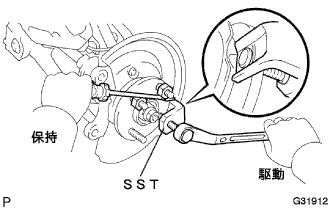

Front axle hub bolt LH removal |
| 1. Remove the front tire |
| 2. Front Dicek Brake Kiki ASSY LH Cut off |
 |
Remove the two bolts and separate the Dysque Brake Kikiki ASSY from the steering knuckle.
| 3. Remove the front disc |
Mark the disc and axle hub and remove the disk.
| 4. Remove the front axle hub bolt LH |
|  |
Use SST to remove the hub bolt from the dust cover and the notches of natsukuru.